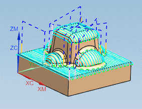
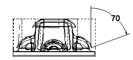

查看轮廓区域铣削工序
ZLEVEL_PROFILE 工序在程序顺序上排在 CONTOUR_AREA 工序之后。您将先查看 CONTOUR_AREA 工序，然后研究后续的 ZLEVEL_PROFILE 工序如何加工未完成的陡峭区域。
-
双击工序导航器中的 CONTOUR_AREA 以编辑该工序。
将打开轮廓区域对话框。
-
点击操作组中的重播
 。
。这个工序使用区域铣削驱动方法来限制刀轨的允许斜度。
将不会加工非常陡峭的区域，这个限制在使用往复切削方法时是必要的，用于防止刀具直接向下插入部件材料中。

在区域铣削方法对话框中，陡峭空间范围指定为非陡峭，陡角指定为70度，这将只允许这个工序加工刀轨小于或等于70度的区域，部件在任意给定点处的斜度通过刀轴与面的法向。

-
点击取消。